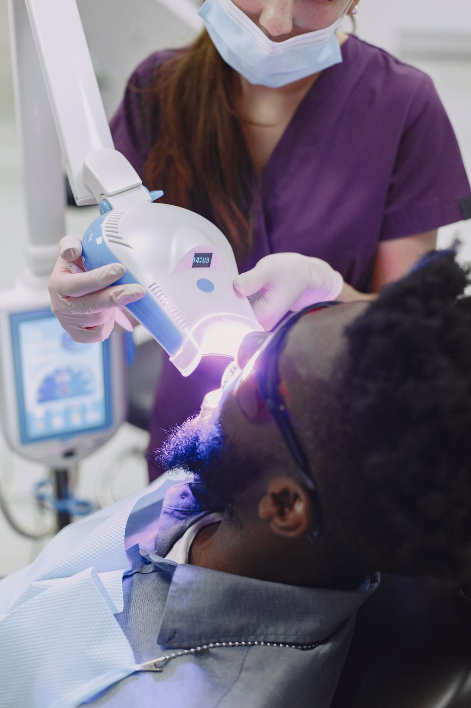
لمینت
پوستههای ظریف سرامیکی برای لبخندی یکدست و طبیعی؛ برای دندانهایی که فرم و رنگشان نیاز به اصلاح جدی دارد.
در دندانپزشکی کوهپایه، دکتر سمانه حمیدیان درمانهای زیبایی و درمانی را — از لمینت و کامپوزیت تا ارتودنسی، پروتز و درمان ریشه — با جدیدترین تجهیزات دندانپزشکی انجام میدهد؛ برای بزرگسالان و کودکان.
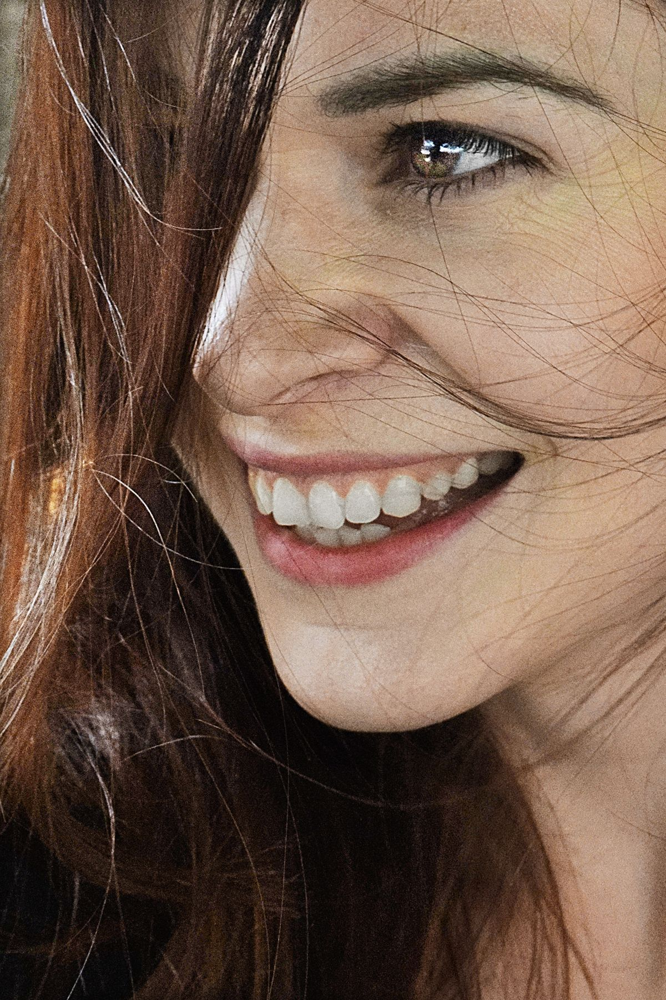
هر هفت خدمت اصلی دندانپزشکی — زیبایی، درمانی و کودکان — در همین مرکز و با تجهیزات بهروز انجام میشود.

پوستههای ظریف سرامیکی برای لبخندی یکدست و طبیعی؛ برای دندانهایی که فرم و رنگشان نیاز به اصلاح جدی دارد.
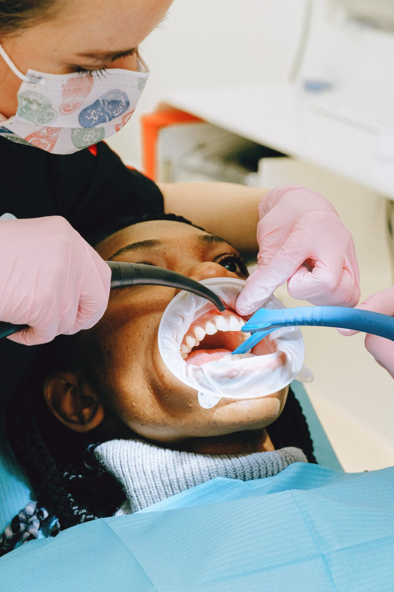
اصلاح فرم و رنگ دندانها با کامپوزیت؛ راهی سریعتر برای لبخندی مرتبتر، با انتخاب رنگ متناسب با چهره.
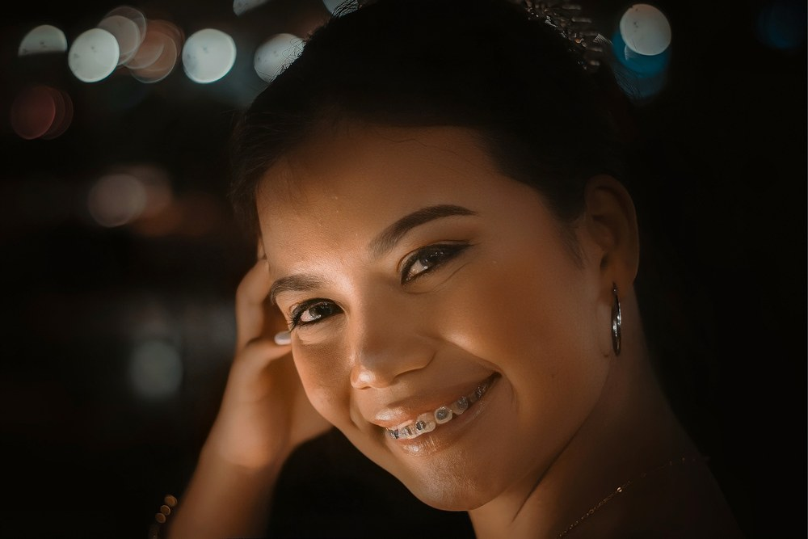
مرتبسازی دندانها برای لبخندی منظمتر و سلامت بهتر دهان و لثه، با برنامه درمانی روشن از همان ابتدا.
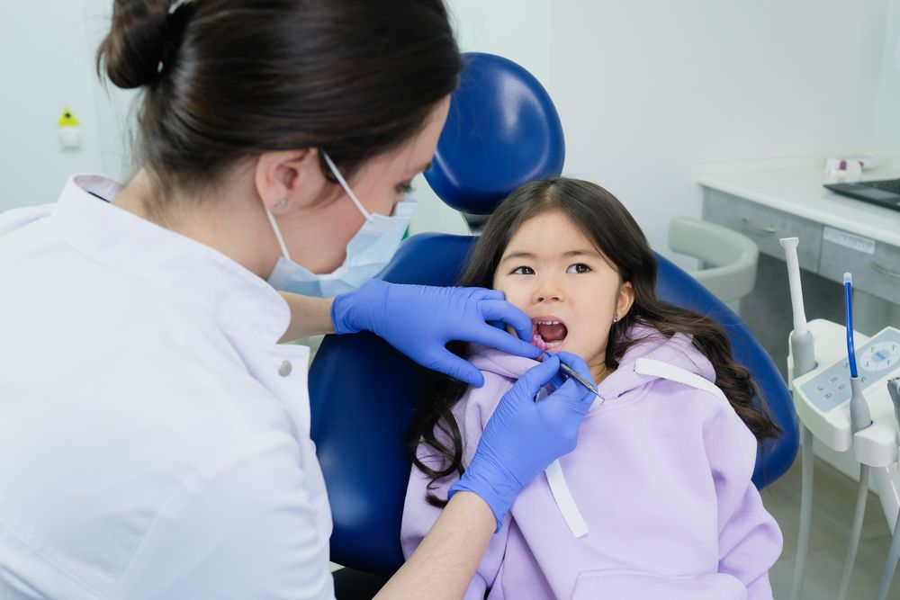
معاینه و درمان دندان بچهها با حوصله و در فضایی آرام، تا اولین تجربههای دندانپزشکیشان بدون ترس باشد.
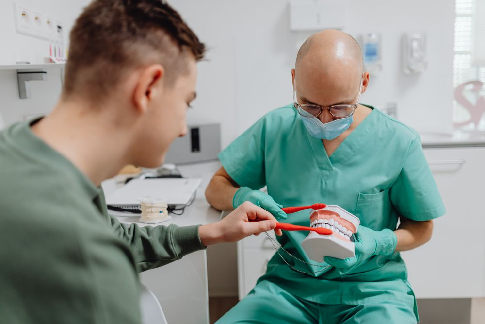
جایگزینی دندانهای ازدسترفته با پروتزهای ثابت و متحرک؛ برای خوردن، صحبت کردن و خندیدن با خیال راحت.
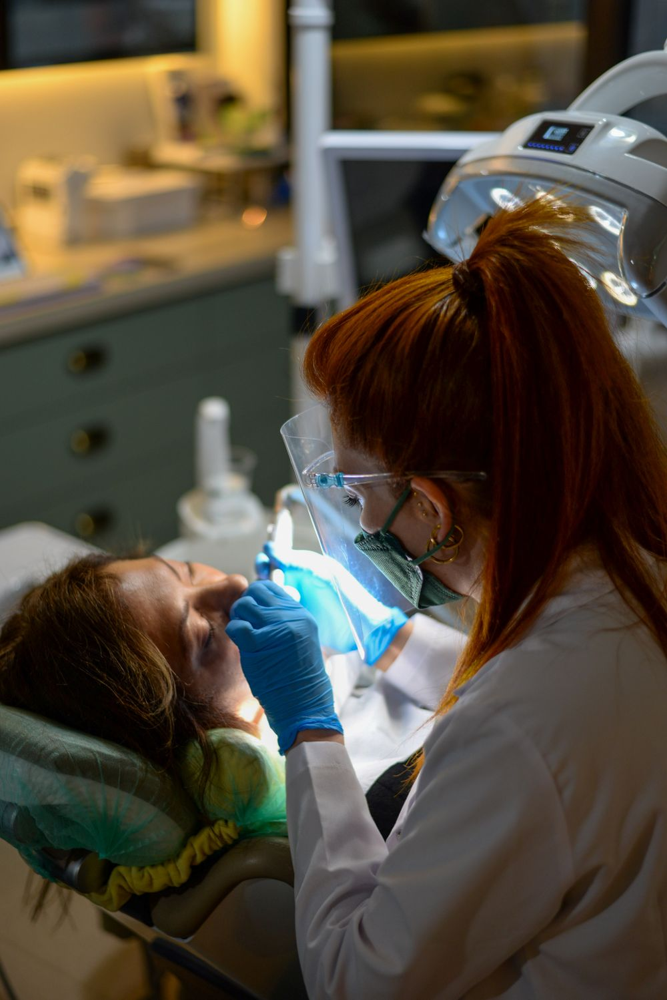
عصبکشی دقیق برای نجات دندان طبیعی و خداحافظی با درد؛ چون هیچ پروتزی جای دندان خودت را نمیگیرد.
جراحی دندانپزشکی هم در کنار این خدمات، در همین مرکز انجام میشود — برای اطلاع از جزئیات درمان خودت، در واتساپ پیام بده.
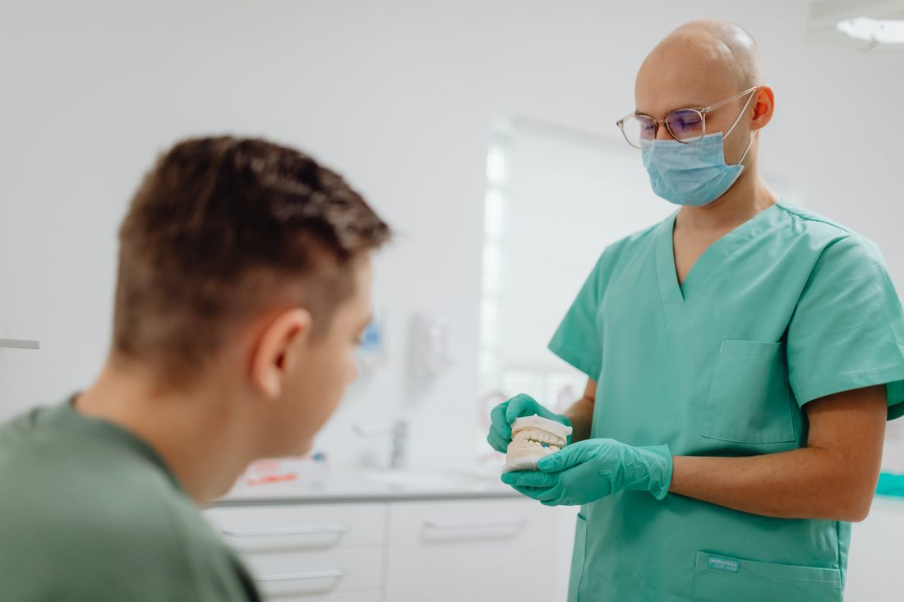
دندانپزشکی کوهپایه در زعفرانیه تهران، با مدیریت دکتر سمانه حمیدیان، درمانهای زیبایی و درمانی را در یک مرکز جمع کرده است؛ از لمینتِ مادر خانواده تا معاینه دورهای بچهها.
لمینت، کامپوزیت، ارتودنسی، جراحی، پروتز، درمان ریشه و اطفال — لازم نیست برای هر درمان، مرکز تازهای پیدا کنی.
خدمات مرکز با تجهیزات بهروز ارائه میشود؛ دقت بیشتر در درمان، یعنی نتیجه بهتر و ماندگارتر.
بخش دندانپزشکی کودکان یعنی میتوانی درمان خودت و فرزندت را در یک مرکز و با یک تیم آشنا انجام دهی.
محدوده آصف و خیابان کوهپایه؛ دسترسی راحت برای اهالی زعفرانیه و منطقه ۱ تهران.
دقت در معاینه، آرامش در درمان؛ برای بزرگسالان و کودکان.
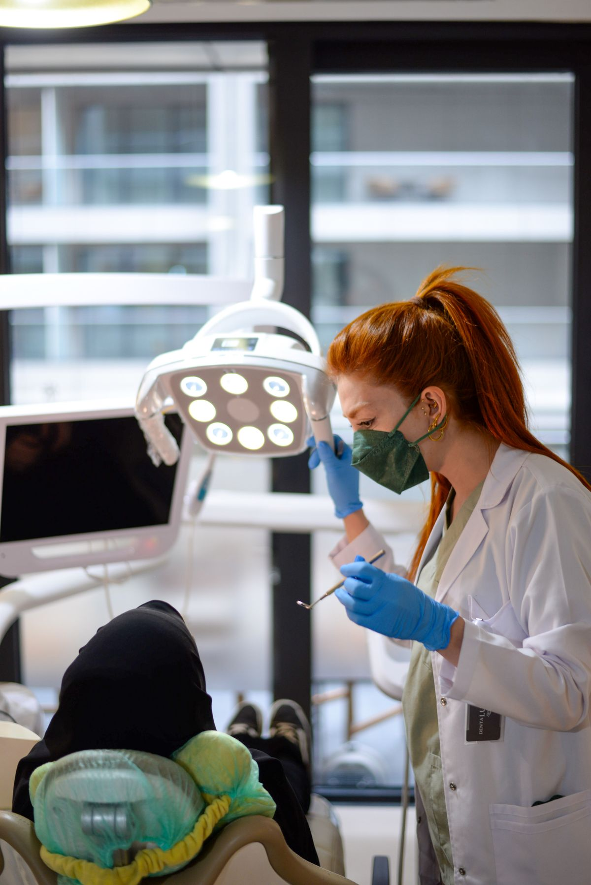
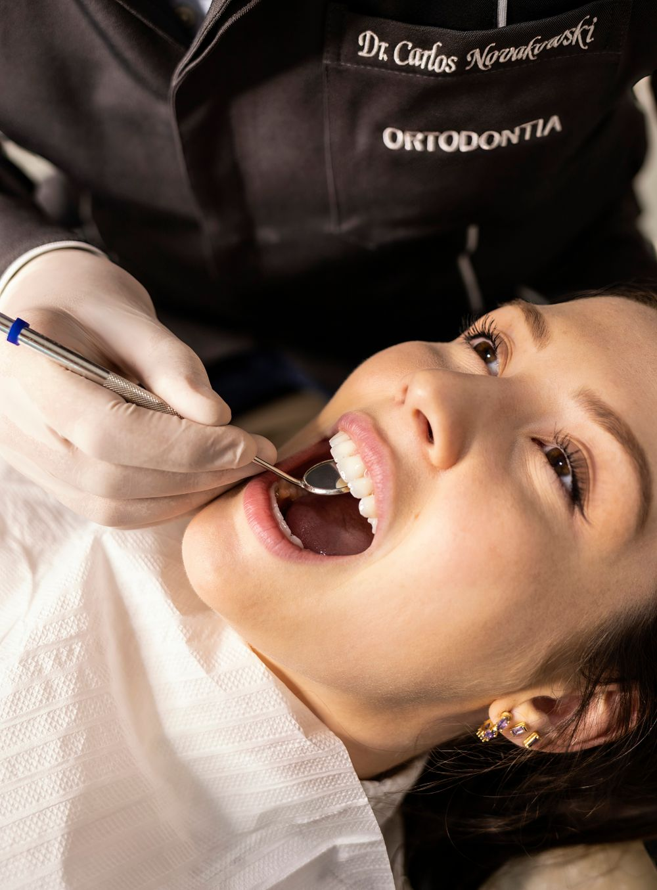
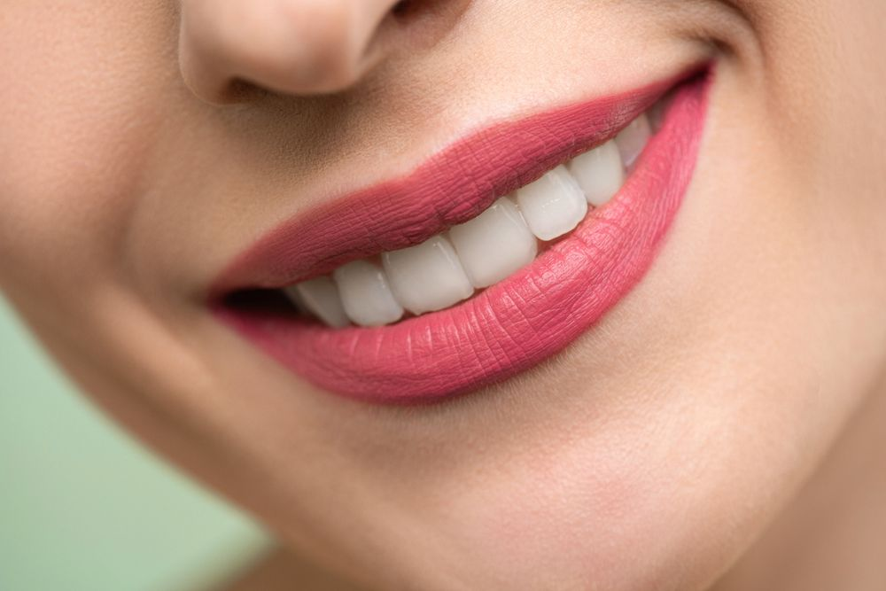
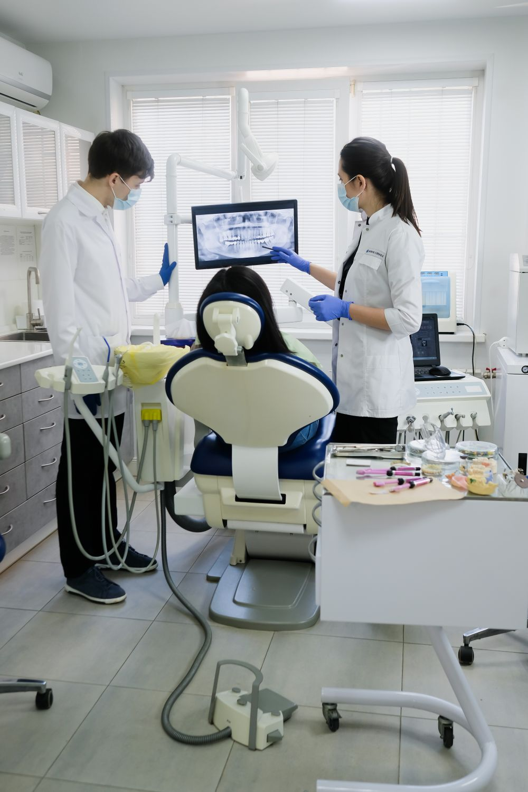
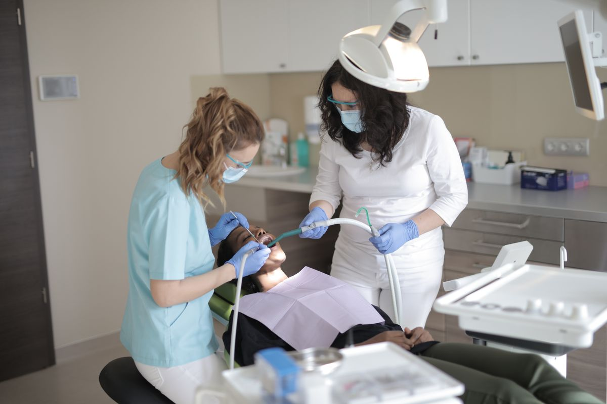
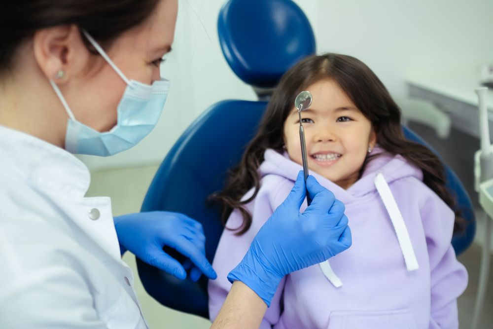
در واتساپ پیام بده یا تماس بگیر؛ زمان ویزیتت هماهنگ میشود.
وضعیت دندانها دقیق بررسی میشود و مسیر درمان، شفاف و قدمبهقدم برایت توضیح داده میشود.
درمان با تجهیزات بهروز و در جلسات مشخص انجام میشود؛ هر مرحله با خودت هماهنگ است.
بعد از درمان تنها نیستی؛ نکات مراقبتی و معاینههای دورهای، بخشی از مسیر سلامت لبخند توست.
سادهترین راه، پیام در واتساپ به شماره ۰۹۰۲۴۷۰۶۲۰۲ است. اگر ترجیح میدهی تماس بگیری، شماره مرکز ۰۲۱-۸۶۰۸۵۰۹۸ پاسخگوی توست.
تهران، زعفرانیه، خیابان نیازاده، خیابان کوهپایه (محدوده آصف). برای مسیریابی دقیق، در واتساپ پیام بده تا راهنماییات کنیم.
بله؛ دندانپزشکی کودکان یکی از خدمات اصلی مرکز است. معاینه و درمان بچهها با حوصله انجام میشود تا تجربه دندانپزشکی برایشان آرام و بدون ترس باشد.
بستگی به وضعیت دندانها و نتیجهای دارد که دنبالش هستی. در جلسه معاینه، هر دو گزینه با مزایا و محدودیتهایشان برای خودت توضیح داده میشود تا انتخاب نهایی با تو باشد.
همین امروز برای رزرو نوبت معاینه پیام بده.